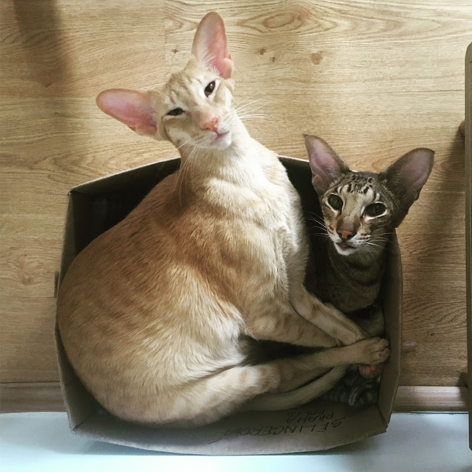
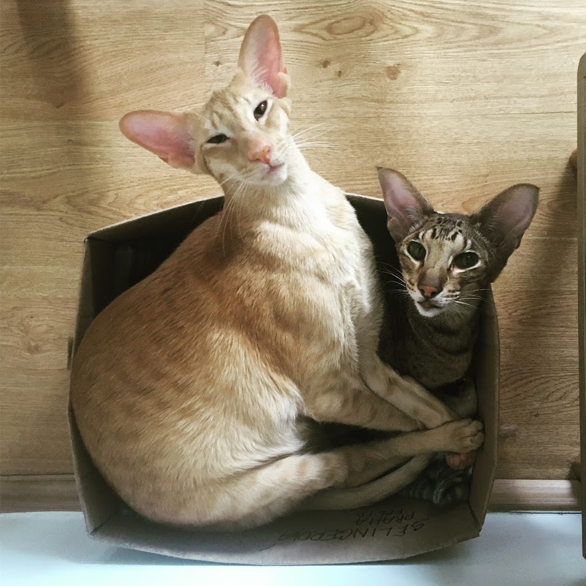

O nás a o swapu
Co je to swapování?
Swapováním myslíme výměnu věcí. Zpravidla oblečení, ale také domácích potřeb, jídla nebo rostlin. Méně často také služeb. V současnosti je u nás v podstatě jediná možnost online swapování na Facebooku. Ten ale ani jedna nemáme a facebookové skupiny navíc nejsou uživatelsky příjemné. SWAP Aplikace by měla pomáhat všem, co mají doma nepotřebné věci a je jim líto je vyhodit. Mohly by se hodit někomu jinému nebo shánějí něco, co se velmi pravděpodobně někomu válí zapomenuté doma a proto je zbytečné za to utrácet.
Kdo jsme my?
Jsme Marie a Magdalena a náš projekt je zatím bezejmenná swapovací aplikace. Jsme dvě kočkomilné knihomolky, snažící se mít spíš méně věcí, než víc a svojí existencí moc nezatěžovat planetu.
Máme celkem čtyři kocoury. Ne společně.

 
Magdalenin profil na GitHubu
Mariin profil na GitHubu

Magdalenin profil na GitHubu
Mariin profil na GitHubu